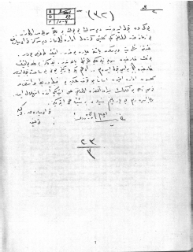

Seyyar Birlikler K. Vekili Tevfik Bey'in düzenli orduya karşı çıkan yazısından son bölüm... Tevfik Bey Garp Cephesi Komutanlığına 27-11-1921 tarihli telgrafının üçüncü maddesinde "bizim müfrezeler zabit gördü mü Azrail görmüş gibi isyan ediyorlar" diyor. (Genel Kurmay Arşiv No:8-1101)